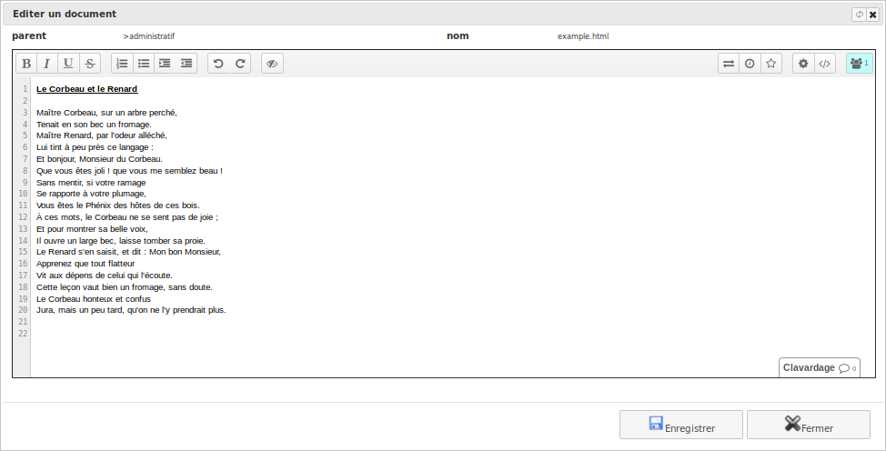
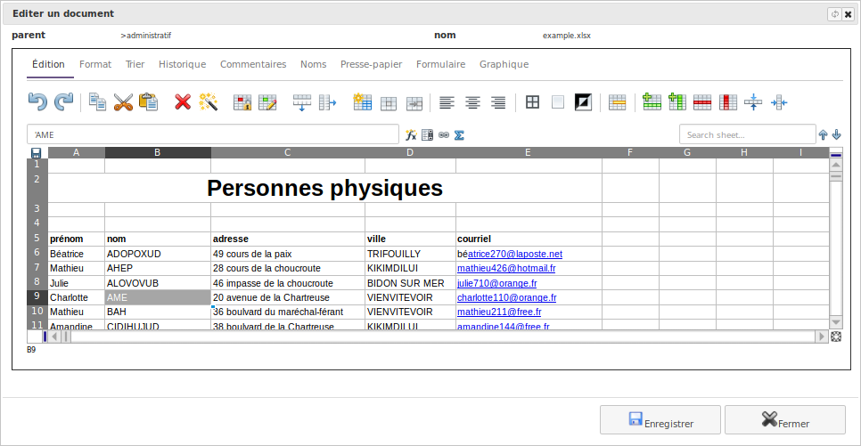
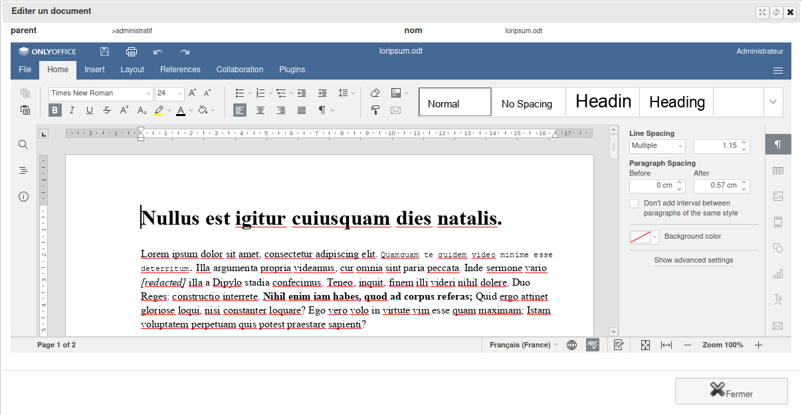

Editeur de documents¶
Il est possible de configurer l’outil afin de pouvoir éditer certains documents directement via l’interface « en ligne ».
Des outils d’édition, libres et gratuits, sont actuellement configurables afin de les utiliser pour consulter et modifier des documents.
Note : Ces outils sont gérés par des équipes complètement différentes, il se peut que certains de leurs comportements ne correspondent pas à vos attentes.
Etherpad¶
Éditeur pour document textuel.
Site Web
Installation
Le tutoriel de framasoft explique bien comment l’installer: https://framacloud.org/fr/cultiver-son-jardin/etherpad.html
Configurer
Éditer le fichier « settings.py » contenu dans le répertoire de votre instance. Ajouter et adapter la ligne ci-dessous:
url : adresse d’accès d’Etherpad
apikey : contenu de la clef de sécurité (fichier APIKEY.txt contenu dans l’installation d’etherpad)
# extra
ETHERPAD = {'url': 'http://localhost:9001', 'apikey': 'jfks5dsdS65lfGHsdSDQ4fsdDG4lklsdq6Gfs4Gsdfos8fs'}
Usage
- Dans le gestionnaire de documents, vous avez plusieurs actions qui apparaissent alors:
Un bouton « + Fichier » vous permettant de créer un document txt ou html depuis la liste d’un dossier.
Un bouton « Editeur » pour ouvrir l’éditeur Etherpad depuis la fiche du document.


Ethercalc¶
Éditeur pour tableau de calcul.
Site Web
Installation
Sur le wiki des sources, une petit explication indique comment l’installer.
Configurer
Editer le fichier « settings.py » contenu dans le répertoire de votre instance. Ajouter et adapter la ligne ci-dessous:
url : adresse d’accès d’Ethercal
# extra
ETHERCALC = {'url': 'http://localhost:8000'}
Usage
- Dans le gestionnaire de documents, vous avez plusieurs actions qui apparaissent alors:
Un bouton « + Fichier » vous permettant de créer un document csv, ods ou xmlx depuis la liste d’un dossier.
Un bouton « Editeur » pour ouvrir l’éditeur Ethercalc depuis la fiche du document.


OnlyOffice Docs Community Edition¶
Éditeurs en ligne pour les documents texte, les feuilles de calcul et les présentations.
Site Web
Installation
Nous vous recommandons l’installation via Docker comme expliqué ici: https://helpcenter.onlyoffice.com/installation/docs-community-install-docker.aspx
Configurer
Editer le fichier « settings.py » contenu dans le répertoire de votre instance. Ajouter et adapter la ligne ci-dessous:
url : adresse d’accès d’OnlyOffice
# extra
ONLYOFFICE = {'url': 'http://localhost:8100'}
Usage
- Dans le gestionnaire de documents, vous avez plusieurs actions qui apparaissent alors:
Un bouton « + Fichier » vous permettant de créer un document csv, xlsx, ods, docx, odt, txt, pptx ou odp depuis la liste d’un dossier.
Un bouton « Editeur » pour ouvrir l’éditeur OnlyOffice depuis la fiche du document.
A noter que vous avez également la possibilité de visualiser, en lecture seule, les documents xls, doc, ppt ou pdf

